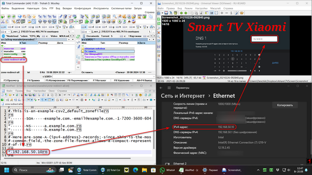
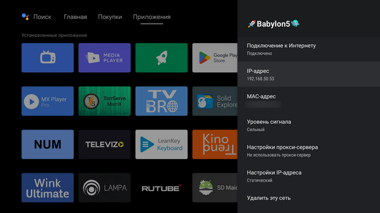
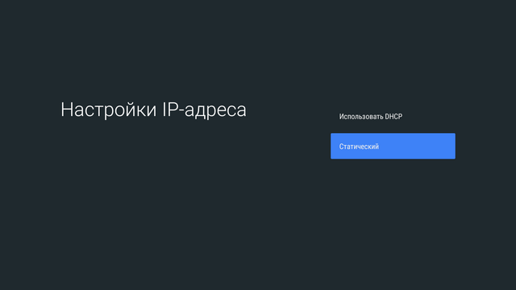
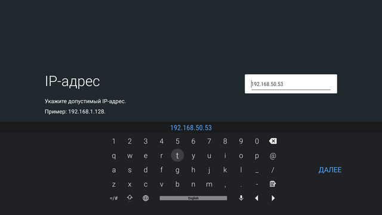
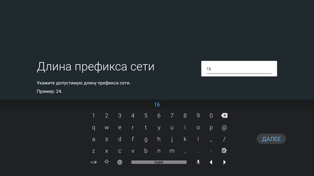
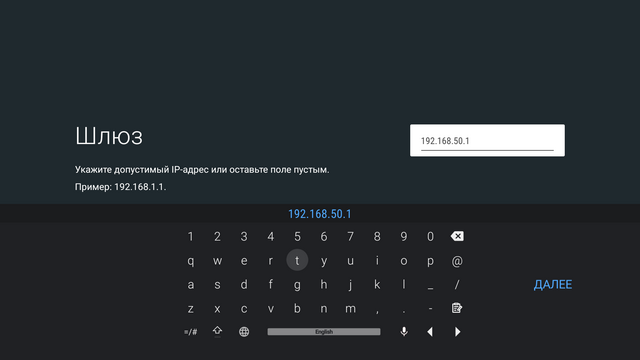
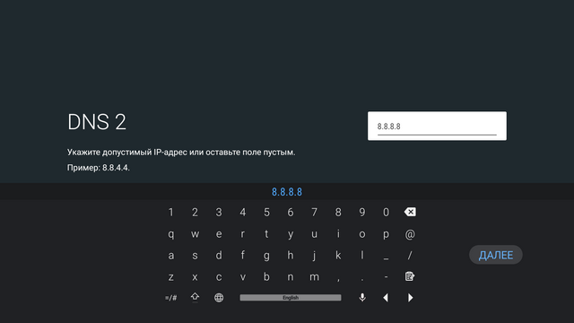
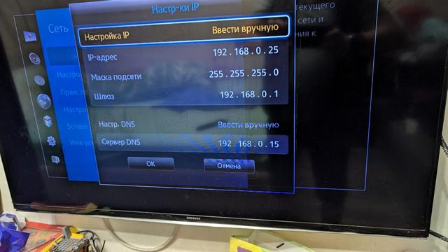

Обсуждение инструкции Обход блокировки YouTube для любых Smart TV с GoodbyeDPI + V2ray + MaraDNS
Звёздочку убирать Перед адресом
Не проще ли взять какой-нибудь бюджетный роутер типо кинетика за 20 тысяч и накатить туда zapret что бы во всей сети все работало? Вы больше потратите на электроэнергию постоянно держа компьютер включенным. Хотя инструкция полезная,но энергозатратная
Не у всех такой вариант срабатывает с телевизором. Вариант с проксированием всего траффика бывает надежнее.
Звёздочку убирать. Перед ip-адресом
Нет, не убирать. Зачем вы написали неправильное действие два раза?
Просто вы не Ответили. У меня почему-то не Запускается mara-run . Хочет запуститься . И сразу закрывается
Так это был вопрос?
Запустите командную строку cmd вручную, перейдите в директорию и запустите mara-run.cmd, увидите вывод ошибки, если он есть.
https://window-opens-and-closes.info/?lang=ru
C:\v2ray-maradns\maradns>maradns.exe -f mara-config.txt
THIS SOFTWARE IS PROVIDED BY THE AUTHORS ‘‘AS IS’’ AND ANY EXPRESS OR
IMPLIED WARRANTIES, INCLUDING, BUT NOT LIMITED TO, THE IMPLIED WARRANTIES
OF MERCHANTABILITY AND FITNESS FOR A PARTICULAR PURPOSE ARE DISCLAIMED.
IN NO EVENT SHALL THE AUTHORS OR CONTRIBUTORS BE LIABLE FOR ANY DIRECT,
INDIRECT, INCIDENTAL, SPECIAL, EXEMPLARY, OR CONSEQUENTIAL DAMAGES
(INCLUDING, BUT NOT LIMITED TO, PROCUREMENT OF SUBSTITUTE GOODS OR
SERVICES; LOSS OF USE, DATA, OR PROFITS; OR BUSINESS INTERRUPTION)
HOWEVER CAUSED AND ON ANY THEORY OF LIABILITY, WHETHER IN CONTRACT,
STRICT LIABILITY, OR TORT (INCLUDING NEGLIGENCE OR OTHERWISE) ARISING
IN ANY WAY OUT OF THE USE OF THIS SOFTWARE, EVEN IF ADVISED OF THE
POSSIBILITY OF SUCH DAMAGE.
To not display this message, add the follwing to your mararc file:
hide_disclaimer = “YES”
Fatal error: Problem binding to port 53.
System said: No error
C:\v2ray-maradns\maradns>
вот такая ошибка выходит как решит?
Попробуйте запускать от администратора, но у меня работало и так на Windows 7 и 10.
Администратором Я . Тоже пробовал. Бесполезно. У меня Windows 11
Какая-то ошибка. Пятьдесят третьего Порта
Возможно, у вас уже запущен какой-то DNS-сервер. Отключите его.
тоже ошибка с 53 портом , винда 11, запускал от адмистарора
Мне помогло это Redirecting
Нужно отключить сервисы “Host Network Service” и “Internet Connection Sharing (ICS)” (они нужны для Hyper-V)
Для контекста networking - Why Windows 10 has a svchost process that listen on port 53? - Super User
Можете подсказать какие еще адреса добавить к правилам применения впн? На андроиде ютуб не работает хотя в списке следующие адреса:
youtubei.googleapis.com
googlevideo.com
gvt1.com
video.google.com
youtube-nocookie.com
youtube-ui.l.google.com
youtubeeducation.com
googleapis.com
youtubekids.com
yt3.ggpht.com
ytimg.com
youtu.be
yt.be
youtube.com
Вроде всё подцепилось, но интерфейс приложения YouTube на WebOS не отрисовывается (текст на сером фоне). Но можно запустить видео наощупь и оно проигрывается
все разобрался на 53 порту сидела какаято ctrld.exe в диспетчере нашел. убил процесс.
Мара запустилась, пойду тестить теперь на теликах
Вылечилось отключением IPv6 на ТВ
Добавил в инструкцию, благодарю!
У меня Win11
Поставил все по инструкции. Проверил что в браузере на компе youtube работает.
Настроил DNS на телике, проверил что браузер на телеке загружает странички, запустил ютуб. Все заработало. Потом отключил сервер на копме.
Решил еще раз зайти в ютуб на телике. Все запустил на компе, на телеке проверил загрузку страниц через браузер - все ок. Запускаю ютуб - не работает. triubleshooting по инструкции - все в порядке. Захожу на ютуб через браузер на компе, загружаю пару видео - все работает. И тут же на телеке ютуб прогрузился.
И работает только так. Запустить сервер на компе, затем зайти на ютуб через браузер на компе и только потом начинает работать ютуб на телике (Samsung).
Не очень понял почему так.
При запуске maradns получаем Fatal Error opening secret.txt.
Сам secret.txt пустой. Поиск решения не дал. Что за гадость? ОС Win 8.1
Туплю, не могу найти это в списке служб, не подскажите, как оно называется в русской локализации?
Просто у меня такая же ошибка при запуске maradns, как описывалась выше - Fatal error: Problem binding to port 53.
DNS никакой не стоит, запуск от имени администратора не помогает.
Посмотрел, что запущено на этом порту:
netstat -ano | grep 53 - высветился pid 3668, ищу по нему:
tasklist /fi “pid eq 3668”
выходит:
svchost.exe 3668 Services 0 19 020 КБ
его убивать нездоровое занятие.
Тут увидел Ваш пост про то, что нужно отключить сервисы “Host Network Service” и “Internet Connection Sharing (ICS)” и завис с первым.
Добрый вечер!
Столкнулся с ошибкой “Fatal error opening secret.txt” при выполнении mara-run.cmd. Вижу, что ранее писали о ICO и Host Network Service, но у себя проверил - обе службы выключены.
Не подскажете, с чем еще может быть связана проблема? Файл secret.txt и должен быть пустым?
Здравствуйте!
Так все запустилось но не работает, при попытке соединения пытается перенаправить на 3.3.3.3:80 (это что ?) и все висит, так на компе в браузере все работает, на ТВ нет… что я забыл сделать ?
Вот такой лог когда смарт тв LG пытается запустить youtube, он висит
V2Ray 5.13.0 (V2Fly, a community-driven edition of V2Ray.) Custom (go1.21.4 windows/amd64)
A unified platform for anti-censorship.
2024/08/19 21:19:49 [Debug] app/log: Logger started
2024/08/19 21:19:49 [Info] app/dns: DNS: created localhost client
2024/08/19 21:19:49 [Debug] app/dns: using default domain matcher
2024/08/19 21:19:49 [Debug] app/proxyman/inbound: creating stream worker on 0.0.0.0:443
2024/08/19 21:19:49 [Debug] app/proxyman/inbound: creating stream worker on 0.0.0.0:80
2024/08/19 21:19:49 [Info] transport/internet/tcp: listening TCP on 0.0.0.0:443
2024/08/19 21:19:49 [Info] transport/internet/tcp: listening TCP on 0.0.0.0:80
2024/08/19 21:19:49 [Warning] V2Ray 5.13.0 started
2024/08/19 21:20:11 [Debug] [79472124] proxy/dokodemo: processing connection from: 192.168.1.186:46968
2024/08/19 21:20:11 [Info] [79472124] proxy/dokodemo: received request for 192.168.1.186:46968
2024/08/19 21:20:11 192.168.1.186:46968 accepted tcp:3.3.3.3:443 [direct]
2024/08/19 21:20:11 [Info] [79472124] app/dispatcher: sniffed domain: www.youtube.com for tcp:3.3.3.3:443
2024/08/19 21:20:11 [Info] [79472124] app/dispatcher: taking detour [direct] for [tcp:www.youtube.com:443]
2024/08/19 21:20:11 [Info] [79472124] proxy/freedom: opening connection to tcp:www.youtube.com:443
2024/08/19 21:20:11 [Info] [79472124] transport/internet/tcp: dialing TCP to tcp:www.youtube.com:443
Не знаю как в русской локализации. Описание у сервиса такое “Provides support for Windows Virtual Networks.” (путь “C:\WINDOWS\system32\svchost.exe -k NetSvcs -p”)
У меня этот файл пустой и всё работает. Видимо приложение не может открыть файл для чтения. Как вариант можно попробовать запустить mara-run.cmd от имени администратора. Ещё вариант распаковать архив в директорию, которая не является системной
Обе команды я и так выполнял через командную строку под администратором. Перепроверю еще раз службы, у меня Win русифцирована, мог не ту службу за Host Network Service принять.
Спасибо! Вчера нашёл, но правка и удаление поста было уже не доступно.
Весь день экспериментировал на разных устройствах, ставил на виртуальные машины разные windows, в том числе и английскую. Сравнивая службы, нашёл соответствия:
HNS
Host Network Service / Сетевая служба узла
Provides support for Windows Virtual Networks / Обеспечивает поддержку для виртуальных сетей Windows.
C:\Windows\system32\svchost.exe -k NetSvcs -p
SharedAccess
Internet Connection Sharing (ICS) / Общий доступ к подключению к Интернету (ICS)
Provides network address translation, addressing, name resolution and/or intrusion prevention services for a home or small office network. / Предоставляет службы трансляции сетевых адресов, адресации, разрешения имен и службы предотвращения вторжения для домашней сети или сети небольшого офиса.
C:\Windows\System32\svchost.exe -k netsvcs -p
После этого maradns запускается без ошибок, и хотя в настройке TV про Ipv6 ни слова, провайдер Ipv6 не выдаёт, в логах v2ray видны IP TV Ipv4, все IP в сети статичны (выдаются в соответствии с их MAC адресам) на TV не работает почти ничего. Хотя GoodByeDpi на компе работает отлично.
А на TV в браузере (TVBro) либо не открываются сайты, либо пишется - ошибка сертификата.
Google и GitHub работает только.
Не работают (нет подключения к интернету):
YouTube, SmartTube, RuTube, Televizo (ни каналы, ни epg), Lampa, MUM,
Movian, DropSync.
Работают: TiviMate (тот же плейлист, те же каналы, что и в Televizo), KinoTrend + TorrServe + ViMu.
Пробовал запускать от админа v2ray-run.cmd и mara-run.cmd - оба просто не запускаются в таком режиме.
Пишется ошибка: “v2ray.exe” / “maradns.exe” не является внутренней или внешней
командой, исполняемой программой или пакетным файлом.
В обычном режиме - запускаются.
Так же в логах видны какие-то странные редиректы, как выше были описаны:
2024/08/20 08:24:45 [Info] [2591961495] app/dispatcher: sniffed domain: connectivitycheck.gstatic.com for tcp:3.3.3.3:443
Попробовал на планшете - ситуация схожая.
В логах мелькают такие записи:
2024/08/20 09:18:23 [Info] [2011214474] app/proxyman/outbound: failed to process outbound traffic > proxy/freedom: connection ends > context canceled
Youtube, Revanced, NewPipe - картинки грузятся, но проигрывания видео не происходит.
Televizo так же не качает epg и не проигрывает видео.
Браузеры открывают все странички, кроме запрещёнки.
Lampa - только загружается, ссылки на фильмы не получаются.
ВК Видео м Rutube - работают.
Идей почти не осталось… 
HNS
Host Network Service / Сетевая служба узла
Provides support for Windows Virtual Networks / Обеспечивает поддержку для виртуальных сетей Windows.
C:\Windows\system32\svchost.exe -k NetSvcs -p
SharedAccess
Internet Connection Sharing (ICS) / Общий доступ к подключению к Интернету (ICS)
Provides network address translation, addressing, name resolution and/or intrusion prevention services for a home or small office network. / Предоставляет службы трансляции сетевых адресов, адресации, разрешения имен и службы предотвращения вторжения для домашней сети или сети небольшого офиса.
C:\Windows\System32\svchost.exe -k netsvcs -p
Тут непонятно. IPv6 адресов нет в логах? Если есть можно ещё в роутере покопаться на предмет наличия настройки IPv6.
В zone-redirect-all.txt корректный IP адрес адаптера на ПК?
Можно попробовать открыть «Командная строка» (Command Prompt) от имени администратора и перейти в каталог с v2ray-run.cmd и mara-run.cmd и запустить вручную (нажимая TAB будут выводится доступные файлы в директории)
Конечно 

Ой, да, забыл написать, так кто же пробовал, но ошибка выдаётся, как и выше описывали:
Fatal error opening secret.txt
Добавлено: Понял почему эта ошибка, была. Запустил, но на TV ничего в лучшую сторону не изменилось…
Логи запуска:
PS C:\Users\Denchik> cd c:\v2ray-maradns\v2ray
PS C:\v2ray-maradns\v2ray> .\v2ray.exe run -config youtube.json
V2Ray 5.13.0 (V2Fly, a community-driven edition of V2Ray.) Custom (go1.21.4 windows/amd64)
A unified platform for anti-censorship.
2024/08/20 13:51:10 [Debug] app/log: Logger started
2024/08/20 13:51:10 [Info] app/dns: DNS: created localhost client
2024/08/20 13:51:10 [Debug] app/dns: using default domain matcher
2024/08/20 13:51:10 [Debug] app/proxyman/inbound: creating stream worker on 0.0.0.0:443
2024/08/20 13:51:10 [Debug] app/proxyman/inbound: creating stream worker on 0.0.0.0:80
2024/08/20 13:51:10 [Info] transport/internet/tcp: listening TCP on 0.0.0.0:80
2024/08/20 13:51:10 [Info] transport/internet/tcp: listening TCP on 0.0.0.0:443
2024/08/20 13:51:10 [Warning] V2Ray 5.13.0 started
PS C:\Users\Denchik> cd c:\v2ray-maradns\maradns
PS C:\v2ray-maradns\maradns> .\maradns.exe -f mara-config.txt
THIS SOFTWARE IS PROVIDED BY THE AUTHORS ‘‘AS IS’’ AND ANY EXPRESS OR
IMPLIED WARRANTIES, INCLUDING, BUT NOT LIMITED TO, THE IMPLIED WARRANTIES
OF MERCHANTABILITY AND FITNESS FOR A PARTICULAR PURPOSE ARE DISCLAIMED.
IN NO EVENT SHALL THE AUTHORS OR CONTRIBUTORS BE LIABLE FOR ANY DIRECT,
INDIRECT, INCIDENTAL, SPECIAL, EXEMPLARY, OR CONSEQUENTIAL DAMAGES
(INCLUDING, BUT NOT LIMITED TO, PROCUREMENT OF SUBSTITUTE GOODS OR
SERVICES; LOSS OF USE, DATA, OR PROFITS; OR BUSINESS INTERRUPTION)
HOWEVER CAUSED AND ON ANY THEORY OF LIABILITY, WHETHER IN CONTRACT,
STRICT LIABILITY, OR TORT (INCLUDING NEGLIGENCE OR OTHERWISE) ARISING
IN ANY WAY OUT OF THE USE OF THIS SOFTWARE, EVEN IF ADVISED OF THE
POSSIBILITY OF SUCH DAMAGE.
To not display this message, add the follwing to your mararc file:
hide_disclaimer = “YES”
Log: Binding to address 0.0.0.0
Log: Socket opened on UDP port 53
WARNING: Your system does not allow setting memory allocation limits!Processing zone * right now.
Filename: zone-redirect-all.txt
Csv2 default zonefile parsed
Log: All RRs have been loaded
Может я на устройствах что-то не так делаю, вот на примере TV:






Попробовал снова, но не под администратором, и чудесным образом оба cmd заработали - ошибок нет.
При этом, ТВ не удается подключиться к сети с заданными вручную настройками DNS. Проблема выглядит так же, как и у DenchikK2024, с поправкой на то, что у меня ТВ на WebOS, а не AndroidTV.
Я в ступоре, если честно.
Опять я не могу в свой пост добавить инфу. 
Может будет удобнее останавливать службы так:
Win+R, cmd, Ctrl+Shift+Enter
wmic service where name=‘SharedAccess’ call ChangeStartmode Disabled
wmic service where name=‘HNS’ call ChangeStartmode Disabled
reboot
Ну или в cmd файл и от админа запускать.
На WebOS пришлось отключать IPv6. Причём в стоковом браузере YouTube работал до выключения IPv6
А если оба DNS задать как IP адрес ПК?
Работает ли YouTube через браузер на TV?
Ещё я дописал доменов в blacklist:
youtube.com
youtu.be
googlevideo.com
ytimg.com
youtubei.googleapis.com
gvt1.com
video.google.com
youtube-nocookie.com
youtube-ui.l.google.com
youtubeeducation.com
googleapis.com
youtubekids.com
yt.be
Ещё антивирус может блокировать входящие соединения.
А вот приме лога когда YouTube работает на TV:
2024/08/20 22:14:56 [Info] [3146608272] proxy/freedom: opening connection to tcp:rr15---sn-n8v7zns7.googlevideo.com:443
2024/08/20 22:14:56 [Info] [3146608272] transport/internet/tcp: dialing TCP to tcp:rr15---sn-n8v7zns7.googlevideo.com:443
2024/08/20 22:14:56 192.168.0.101:42198 accepted tcp:3.3.3.3:443 [direct]
2024/08/20 22:14:57 [Debug] [1613827585] proxy/dokodemo: processing connection from: 192.168.0.101:42200
2024/08/20 22:14:57 [Info] [1613827585] proxy/dokodemo: received request for 192.168.0.101:42200
2024/08/20 22:14:57 [Info] [1613827585] app/dispatcher: sniffed domain: yt3.ggpht.com for tcp:3.3.3.3:443
2024/08/20 22:14:57 [Info] [1613827585] app/dispatcher: taking detour [direct] for [tcp:yt3.ggpht.com:443]
2024/08/20 22:14:57 [Info] [1613827585] proxy/freedom: opening connection to tcp:yt3.ggpht.com:443
2024/08/20 22:14:57 [Info] [1613827585] transport/internet/tcp: dialing TCP to tcp:yt3.ggpht.com:443
2024/08/20 22:14:57 192.168.0.101:42200 accepted tcp:3.3.3.3:443 [direct]
2024/08/20 22:15:01 [Info] [2748023222] transport/internet/tcp: dialing TCP to tcp:3.3.3.3:443
2024/08/20 22:15:01 [Info] [2748023222] app/proxyman/inbound: connection ends > proxy/dokodemo: connection ends > context canceled
2024/08/20 22:15:01 [Info] [2748023222] transport/internet/tcp: dialing TCP to tcp:3.3.3.3:443
2024/08/20 22:15:01 [Info] [2748023222] transport/internet/tcp: dialing TCP to tcp:3.3.3.3:443
2024/08/20 22:15:01 [Info] [2748023222] transport/internet/tcp: dialing TCP to tcp:3.3.3.3:443
2024/08/20 22:15:02 [Info] [2748023222] app/proxyman/outbound: failed to process outbound traffic > proxy/freedom: failed to open connection to tcp:3.3.3.3:443 > common/retry: [dial tcp 3.3.3.3:443: i/o timeout dial tcp 3.3.3.3:443: operation was canceled] > common/retry: all retry attempts failed
2024/08/20 22:15:07 [Info] [4162683477] app/proxyman/inbound: connection ends > proxy/dokodemo: connection ends > context canceled
2024/08/20 22:15:07 [Info] [4162683477] app/proxyman/outbound: failed to process outbound traffic > proxy/freedom: connection ends > context canceled
2024/08/20 22:15:07 [Debug] [1157136101] proxy/dokodemo: processing connection from: 192.168.0.101:42204
2024/08/20 22:15:07 [Info] [1157136101] proxy/dokodemo: received request for 192.168.0.101:42204
2024/08/20 22:15:07 [Info] [1157136101] app/dispatcher: sniffed domain: rr15---sn-n8v7zns7.googlevideo.com for tcp:3.3.3.3:443
2024/08/20 22:15:07 [Info] [1157136101] app/dispatcher: taking detour [direct] for [tcp:rr15---sn-n8v7zns7.googlevideo.com:443]
2024/08/20 22:15:07 [Info] [1157136101] proxy/freedom: opening connection to tcp:rr15---sn-n8v7zns7.googlevideo.com:443
2024/08/20 22:15:07 [Info] [1157136101] transport/internet/tcp: dialing TCP to tcp:rr15---sn-n8v7zns7.googlevideo.com:443
IPv6 выключен и на роутере, и на ПК, и на ТВ. После очередной перезагрузки ПК и ТВ получилось, Youtube заработал. При этом, с загрузкой сайтов в браузере все еще проблемы, обложки видео и элементы интерфейса в приложении YT тоже нестабильно работают, хотя сами видео спокойно грузятся в 4К.
В целом, текущее состояние меня устраивает, поэтому дальше копаться не буду. Времени и так было потрачено много на настройку.
Спасибо за полезные советы 
Когда выбран DHCP, видны значения IP, DNS и т. д.?
Если да, то можно для статического IP прописать все те же значения, кроме DNS1 и/или DNS2 (куда мы впишем IP нашего ПК согласно инструкции). Мне именно это помогло.
Здравствуйте! я новичок на форуме, помогите плиз разобраться…выше писал. все настроил, V2fly пишет лог при запуске ТВ, но ютуб не работает, просто висит…
А как отключить ? у себя не нашел, телек LG 2014 года
У меня это было там же где DNS можно задать. Как вариант можно в инете поискать именно для вашей версии WebOS
Попробовал - не помогло, в браузере YouTube так же не работает. Не работают даже часы - пишут 9 утра постоянно. Отключение антивируса и открытие портов 53, 80 и 443 тоже результата не даёт. Короче, я сдался.  Ухожу обратно на ByeDPI, тем более на компе мне нужен WSA и проч, что висят на 53 порту. Хотел сделать на своих теликов Samsung, где нет Андроида, да видно не судьба. Да и всё равно к ним подключены ТВ Боксы.
Ухожу обратно на ByeDPI, тем более на компе мне нужен WSA и проч, что висят на 53 порту. Хотел сделать на своих теликов Samsung, где нет Андроида, да видно не судьба. Да и всё равно к ним подключены ТВ Боксы. 
Да похоже нет настройки пишут тоже не у всех моделей, может там и нет ipv6
Есть ли что-то подобное для телефона? Чтобы не держать пк постоянно включённым.
Есть, к примеру: ByeDPI, ADGuard с включенным обходом DPI.
Для просмотра с телефона у меня работает прокси PowerTunnel. Я имею ввиду запуск чего-то вроде V2ray + MaraDNS на телефоне.
Вчера, вооружившись старым ноутбуком, пошёл по друзьям и подругам. 
Антивиря на нём нет, порты 53, 80, 443 открыл на всякий. Тестирую.
Железки: операторские оптические терминалы, телеки - старые самсунги, серий d, e, f, h ещё до тайзенов. Настройки сети там таковы:

Ютуб подгружается, но очень долго - до появления надписи YouTube может проходить минут 7.
Потом появляются картинки каналов, но видео так и не запускается, сколько бы не ждал.
При этом на ноуте бешенно бегают строчки в логе v2ray.
С одной стороны - это лучше, чем у меня дома, с другой - всё-равно видео не работет.
Сорри, был не трезв, не понял сразу 
У меня заработало) так нада было вот это запускать service_install_russia_blacklist_dnsredir.cmd, почему то в инструкции не указано ? или не в этом дело ?
Спасибо, все заработало.
Однако, этот способ ломает на apple tv работу приложения soap4.me (сериальный ресурс). Всякие кинопоиски и лампы продолжают работать, а вот “мыло” при загрузке видео уходит в ошибку. Есть мысли как это можно поправить? Может, hosts поправить?
Спасибо, на ТВ Samsung и LG появилась возможность смотреть Youtube. Использовал свой mini PC, который всё равно включен 24/7 и используется для других задач.
Не работает. Все сделал по инструкции. Захожу на телевизоре в приложение youtube, он несколько секунд думает, ничего не загружает и выходит обратно на тв-каналы.
Вот лог:
C:\v2ray-maradns\v2ray>v2ray.exe run -config youtube.json
V2Ray 5.13.0 (V2Fly, a community-driven edition of V2Ray.) Custom (go1.21.4 windows/amd64)
A unified platform for anti-censorship.
2024/08/24 23:24:04 [Debug] app/log: Logger started
2024/08/24 23:24:04 [Info] app/dns: DNS: created localhost client
2024/08/24 23:24:04 [Debug] app/dns: using default domain matcher
2024/08/24 23:24:04 [Debug] app/proxyman/inbound: creating stream worker on 0.0.0.0:443
2024/08/24 23:24:04 [Debug] app/proxyman/inbound: creating stream worker on 0.0.0.0:80
2024/08/24 23:24:04 [Info] transport/internet/tcp: listening TCP on 0.0.0.0:443
2024/08/24 23:24:04 [Info] transport/internet/tcp: listening TCP on 0.0.0.0:80
2024/08/24 23:24:04 [Warning] V2Ray 5.13.0 started
2024/08/24 23:24:32 [Debug] [135162943] proxy/dokodemo: processing connection from: 192.168.0.218:54196
2024/08/24 23:24:32 [Info] [135162943] proxy/dokodemo: received request for 192.168.0.218:54196
2024/08/24 23:24:32 [Info] [135162943] app/dispatcher: sniffed domain: lcprd1.samsungcloudsolution.net for tcp:3.3.3.3:443
2024/08/24 23:24:32 [Info] [135162943] app/dispatcher: taking detour [direct] for [tcp:lcprd1.samsungcloudsolution.net:443]
2024/08/24 23:24:32 192.168.0.218:54196 accepted tcp:3.3.3.3:443 [direct]
2024/08/24 23:24:32 [Info] [135162943] proxy/freedom: opening connection to tcp:lcprd1.samsungcloudsolution.net:443
2024/08/24 23:24:32 [Info] [135162943] transport/internet/tcp: dialing TCP to tcp:lcprd1.samsungcloudsolution.net:443
2024/08/24 23:24:35 [Debug] [662737625] proxy/dokodemo: processing connection from: 192.168.0.218:54204
2024/08/24 23:24:35 [Info] [662737625] proxy/dokodemo: received request for 192.168.0.218:54204
2024/08/24 23:24:35 [Info] [662737625] app/dispatcher: sniffed domain: www.youtube.com for tcp:3.3.3.3:443
2024/08/24 23:24:35 192.168.0.218:54204 accepted tcp:3.3.3.3:443 [direct]
2024/08/24 23:24:35 [Info] [662737625] app/dispatcher: taking detour [direct] for [tcp:www.youtube.com:443]
2024/08/24 23:24:35 [Info] [662737625] proxy/freedom: opening connection to tcp:www.youtube.com:443
2024/08/24 23:24:35 [Info] [662737625] transport/internet/tcp: dialing TCP to tcp:www.youtube.com:443
2024/08/24 23:24:44 [Info] [135162943] transport/internet/tcp: dialing TCP to tcp:lcprd1.samsungcloudsolution.net:443
2024/08/24 23:24:44 [Info] [135162943] transport/internet/tcp: dialing TCP to tcp:lcprd1.samsungcloudsolution.net:443
2024/08/24 23:24:45 [Info] [135162943] transport/internet/tcp: dialing TCP to tcp:lcprd1.samsungcloudsolution.net:443
2024/08/24 23:24:45 [Info] [135162943] transport/internet/tcp: dialing TCP to tcp:lcprd1.samsungcloudsolution.net:443
2024/08/24 23:24:45 [Info] [135162943] app/proxyman/outbound: failed to process outbound traffic > proxy/freedom: failed to open connection to tcp:lcprd1.samsungcloudsolution.net:443 > common/retry: [dial tcp: lookup lcprd1.samsungcloudsolution.net: no such host] > common/retry: all retry attempts failed
2024/08/24 23:24:45 [Info] [135162943] app/proxyman/inbound: connection ends > proxy/dokodemo: connection ends > proxy/dokodemo: failed to transport response > io: read/write on closed pipe
2024/08/24 23:24:47 [Info] [662737625] transport/internet/tcp: dialing TCP to tcp:www.youtube.com:443
2024/08/24 23:24:48 [Info] [662737625] transport/internet/tcp: dialing TCP to tcp:www.youtube.com:443
2024/08/24 23:24:48 [Info] [662737625] transport/internet/tcp: dialing TCP to tcp:www.youtube.com:443
2024/08/24 23:24:48 [Info] [662737625] transport/internet/tcp: dialing TCP to tcp:www.youtube.com:443
2024/08/24 23:24:48 [Info] [662737625] app/proxyman/outbound: failed to process outbound traffic > proxy/freedom: failed to open connection to tcp:www.youtube.com:443 > common/retry: [dial tcp: lookup www.youtube.com: no such host] > common/retry: all retry attempts failed
2024/08/24 23:24:48 [Info] [662737625] app/proxyman/inbound: connection ends > proxy/dokodemo: connection ends > proxy/dokodemo: failed to transport response > io: read/write on closed pipe
2024/08/24 23:24:48 [Debug] [3295749022] proxy/dokodemo: processing connection from: 192.168.0.218:54205
2024/08/24 23:24:48 [Info] [3295749022] proxy/dokodemo: received request for 192.168.0.218:54205
2024/08/24 23:24:48 [Info] [3295749022] app/dispatcher: sniffed domain: www.youtube.com for tcp:3.3.3.3:443
2024/08/24 23:24:48 [Info] [3295749022] app/dispatcher: taking detour [direct] for [tcp:www.youtube.com:443]
2024/08/24 23:24:48 192.168.0.218:54205 accepted tcp:3.3.3.3:443 [direct]
2024/08/24 23:24:48 [Info] [3295749022] proxy/freedom: opening connection to tcp:www.youtube.com:443
2024/08/24 23:24:48 [Info] [3295749022] transport/internet/tcp: dialing TCP to tcp:www.youtube.com:443
2024/08/24 23:24:48 [Info] [3295749022] transport/internet/tcp: dialing TCP to tcp:www.youtube.com:443
2024/08/24 23:24:49 [Info] [3295749022] transport/internet/tcp: dialing TCP to tcp:www.youtube.com:443
2024/08/24 23:24:49 [Info] [3295749022] transport/internet/tcp: dialing TCP to tcp:www.youtube.com:443
2024/08/24 23:24:49 [Info] [3295749022] transport/internet/tcp: dialing TCP to tcp:www.youtube.com:443
2024/08/24 23:24:50 [Info] [3295749022] app/proxyman/outbound: failed to process outbound traffic > proxy/freedom: failed to open connection to tcp:www.youtube.com:443 > common/retry: [dial tcp: lookup www.youtube.com: no such host] > common/retry: all retry attempts failed
2024/08/24 23:24:50 [Info] [3295749022] app/proxyman/inbound: connection ends > proxy/dokodemo: connection ends > proxy/dokodemo: failed to transport response > io: read/write on closed pipe
2024/08/24 23:25:11 [Debug] [3103536693] proxy/dokodemo: processing connection from: 192.168.0.218:54206
2024/08/24 23:25:11 [Info] [3103536693] proxy/dokodemo: received request for 192.168.0.218:54206
2024/08/24 23:25:11 [Info] [3103536693] app/dispatcher: sniffed domain: lcprd1.samsungcloudsolution.net for tcp:3.3.3.3:443
2024/08/24 23:25:11 192.168.0.218:54206 accepted tcp:3.3.3.3:443 [direct]
2024/08/24 23:25:11 [Info] [3103536693] app/dispatcher: taking detour [direct] for [tcp:lcprd1.samsungcloudsolution.net:443]
2024/08/24 23:25:11 [Info] [3103536693] proxy/freedom: opening connection to tcp:lcprd1.samsungcloudsolution.net:443
2024/08/24 23:25:11 [Info] [3103536693] transport/internet/tcp: dialing TCP to tcp:lcprd1.samsungcloudsolution.net:443
2024/08/24 23:25:11 [Info] [3103536693] transport/internet/tcp: dialing TCP to tcp:lcprd1.samsungcloudsolution.net:443
2024/08/24 23:25:12 [Info] [3103536693] transport/internet/tcp: dialing TCP to tcp:lcprd1.samsungcloudsolution.net:443
2024/08/24 23:25:12 [Info] [3103536693] transport/internet/tcp: dialing TCP to tcp:lcprd1.samsungcloudsolution.net:443
2024/08/24 23:25:12 [Info] [3103536693] transport/internet/tcp: dialing TCP to tcp:lcprd1.samsungcloudsolution.net:443
2024/08/24 23:25:12 [Info] [3103536693] app/proxyman/outbound: failed to process outbound traffic > proxy/freedom: failed to open connection to tcp:lcprd1.samsungcloudsolution.net:443 > common/retry: [dial tcp: lookup lcprd1.samsungcloudsolution.net: no such host] > common/retry: all retry attempts failed
2024/08/24 23:25:12 [Info] [3103536693] app/proxyman/inbound: connection ends > proxy/dokodemo: connection ends > proxy/dokodemo: failed to transport response > io: read/write on closed pipe
2024/08/24 23:25:41 [Debug] [4256289042] proxy/dokodemo: processing connection from: 192.168.0.218:54208
2024/08/24 23:25:41 [Info] [4256289042] proxy/dokodemo: received request for 192.168.0.218:54208
2024/08/24 23:25:41 [Info] [4256289042] app/dispatcher: sniffed domain: xpu.samsungelectronics.com for tcp:3.3.3.3:443
2024/08/24 23:25:41 [Info] [4256289042] app/dispatcher: taking detour [direct] for [tcp:xpu.samsungelectronics.com:443]
2024/08/24 23:25:41 [Info] [4256289042] proxy/freedom: opening connection to tcp:xpu.samsungelectronics.com:443
2024/08/24 23:25:41 [Info] [4256289042] transport/internet/tcp: dialing TCP to tcp:xpu.samsungelectronics.com:443
2024/08/24 23:25:41 192.168.0.218:54208 accepted tcp:3.3.3.3:443 [direct]
2024/08/24 23:25:41 [Info] [4256289042] transport/internet/tcp: dialing TCP to tcp:xpu.samsungelectronics.com:443
2024/08/24 23:25:41 [Info] [4256289042] transport/internet/tcp: dialing TCP to tcp:xpu.samsungelectronics.com:443
2024/08/24 23:25:41 [Info] [4256289042] transport/internet/tcp: dialing TCP to tcp:xpu.samsungelectronics.com:443
2024/08/24 23:25:41 [Info] [4256289042] transport/internet/tcp: dialing TCP to tcp:xpu.samsungelectronics.com:443
2024/08/24 23:25:42 [Info] [4256289042] app/proxyman/outbound: failed to process outbound traffic > proxy/freedom: failed to open connection to tcp:xpu.samsungelectronics.com:443 > common/retry: [dial tcp: lookup xpu.samsungelectronics.com: no such host] > common/retry: all retry attempts failed
2024/08/24 23:25:42 [Info] [4256289042] app/proxyman/inbound: connection ends > proxy/dokodemo: connection ends > proxy/dokodemo: failed to transport response > io: read/write on closed pipe
2024/08/24 23:27:40 [Debug] [3428091860] proxy/dokodemo: processing connection from: 192.168.0.218:54211
2024/08/24 23:27:40 [Info] [3428091860] proxy/dokodemo: received request for 192.168.0.218:54211
2024/08/24 23:27:40 192.168.0.218:54211 accepted tcp:3.3.3.3:443 [direct]
2024/08/24 23:27:40 [Info] [3428091860] app/dispatcher: sniffed domain: upu.samsungelectronics.com for tcp:3.3.3.3:443
2024/08/24 23:27:40 [Info] [3428091860] app/dispatcher: taking detour [direct] for [tcp:upu.samsungelectronics.com:443]
2024/08/24 23:27:40 [Info] [3428091860] proxy/freedom: opening connection to tcp:upu.samsungelectronics.com:443
2024/08/24 23:27:40 [Info] [3428091860] transport/internet/tcp: dialing TCP to tcp:upu.samsungelectronics.com:443
2024/08/24 23:27:52 [Info] [3428091860] transport/internet/tcp: dialing TCP to tcp:upu.samsungelectronics.com:443
2024/08/24 23:27:52 [Info] [3428091860] transport/internet/tcp: dialing TCP to tcp:upu.samsungelectronics.com:443
2024/08/24 23:27:52 [Info] [3428091860] transport/internet/tcp: dialing TCP to tcp:upu.samsungelectronics.com:443
2024/08/24 23:27:53 [Info] [3428091860] transport/internet/tcp: dialing TCP to tcp:upu.samsungelectronics.com:443
2024/08/24 23:27:53 [Info] [3428091860] app/proxyman/outbound: failed to process outbound traffic > proxy/freedom: failed to open connection to tcp:upu.samsungelectronics.com:443 > common/retry: [dial tcp: lookup upu.samsungelectronics.com: no such host] > common/retry: all retry attempts failed
2024/08/24 23:27:53 [Info] [3428091860] app/proxyman/inbound: connection ends > proxy/dokodemo: connection ends > proxy/dokodemo: failed to transport response > io: read/write on closed pipe
А как с помощью MaraDNS резолвить не все имена в ip домашнего компьютера а только сервера ютуба, а на все остальные запросы делать форвард на 8.8.8.8. или 1.1.1.1 ?
куда делся толковый пост про использование unbound вместо нерабочей shmara-dns ?
Похоже сайт восстановили из бекапа, потому что и комментарии потерлись за последние несколько дней и свежие темы пропали. Дублирую свой пост про Unbound:
Не увидел вовремя ответ, заменил MaraDNS на Unbound, там мне показалось проще настроить зоны для доменов ютуба. А все остальные запросы форвардятся на 8.8.8.8
Плюс такого решения в том что мы не только оживляем ютуб но ещё и не ломаем другие сервисы(у меня например винк сломался когда все имена разрешались в ip локального компа) и ещё бонусом Unbound сразу устанавливается как служба.
Скину конфиг для Unbound, вдруг кто то решит повторить service.conf (3,8 КБ)
В нём нужно 192.168.0.200 поменять автозаменой на свой ip на котором запущен V2ray
После вчерашней блокировки goodbyedpi с ключом “-9” перешел на “-e 2 -f 1 --reverse-frag” и перестала работать прокся на телевизоры через v2ray+maradns. Подскажите, куда копать?
4385708alex91
а можно поподробнее про Unbound? У меня тоже таким образом один сервис отвалился.
установил Unbound, взял ваш конфиг файл - soap4me, по-прежнему, через проксю не заработал. ну и ютуб с такими настройками goodyedpi тоже не работает 
починил с флагом --auto-ttl
Всем привет. Чтобы пользоваться Ютубом на Samsung tv с осью Tizen, по интструкции поднял v2ray + maradns на своëм пк пару недель назад. Вчера, как и многим, пришлось сменить пресет goodbyedpi с “-5” (стоял по умолчанию) на “-7”. На пк в итоге Ютуб заработал, а на Samsung с Tizen приложение ютуба даже стартовую страницу не прогружает.
Если “-7” сменить обратно на “-5”, то и на пк, и на Samsung tv ютуб открывается и прогружает всë, кроме самих видео.
Помогите, пожалуйста, запустить v2ray + maradns с параметром “-7”, чтобы на Tizen приложение Ютуба заработало снова…
Поясните пожалуйста, как решили проблему? Так же при правке .cmd в GDPI на телевизоре LG с WebOS перестаёт работать ютуб при использовании связки v2ray+maradns. Хотя на ПК всё работает.
c “-e 1 -f 1 --reverse-frag” работал на компе, но не работал на телевизоре, тут где-то предложили добавить “–auto-ttl”, что я и сделал, у меня получилось “-e 1 -f 1 --reverse-frag --auto-ttl” и все ок, на телевизоре (apple tv) завелось.
Не завелось с этим конфигом ни на ПК, ни на ТВ. “-11” на ПК работает. Есть у кого мысли, как вернуть ютуб на ТВ?
Так а просто –auto-ttl пробовали добавить к вашему рабочему конфигу?
Я уж думал, что я один такой. У вас тоже не работает добавление “–auto-ttl”?
И не Билайн ли у вас провайдер, случайно?
auto-ttl не сработало. Помогла простая замена"-9" на “-7”, правда после полной переустановки и перезагрузки всего
P.S. Ростелеком
Опишите подробней, плз
В общем у меня этот способ стал очень нестабильным. Вчера весь вечер промучался с подбором конфига, менял цифры, добавлял и --reverse-frag и --auto-ttl, и всё сразу, ничего не помогало. В итоге снёс все файлы и мары, и втурей, и гудбайдипиай, перезагрузил ПК и ТВ, поставил-запустил всё заново, в .cmd GDPI прописал -7 вместо -9 и ютуб полетел в 4К! Сегодня утром ютуб на телеке даже не запустился, хотя рутуб, кинопоиск, лампа работают. Кстати LG store тоже не заводится.
Мда, жесть. Надежда на ValdikSS только, насколько я понимаю. Я ему на почту написал (а вдруг), но пока без результатов…
Скажите, пожалуйста, есть ли способ восстановить работу v2ray и maradns в новых реалиях (параметр “-7” в частности)? Или дохлая тема уже?
Запишите дамп, можно без ограничения по IP
goodbyedpi - off.pcapng (510,5 КБ)
goodbyedpi - on.pcapng (1,0 МБ)
По айпишникам youtube’а сделал (v4 и v6) с включенным goodbyedpi (on) и без (off). В первый раз в своей жизни делал дамп. Надеюсь, что всё верно.
В дампах нет момента установки соединения, только уже какие-то существующие соединения.
goodbyedpi - off.pcapng (107,8 КБ)
goodbyedpi - on.pcapng (13,4 КБ)
А так? Вроде запускаю сначала захват трафика по IP Ютьюба, а потом открываю браузер и захожу на Ютьюб с нуля.
А вы знаете, у меня на ТВ ютуб заработал на новой версии утилиты - 1_russia_blacklist_YOUTUBE.cmd. Это через v2ray+maradns. Спасибо вам большое!
Если ещё не скачали, то скачайте новую версию Goodbyedpi (на конце “r3”. там лежит новый батник - 1_russia_blacklist_YOUTUBE.cmd. У меня с ним завелось на ТВ!
Добрый день.
Может кто-то поможет - запускаю v2ray - и всё никакого лога не отображается. То есть, как будто не приходят никакие запросы на него. Вроде прочитал полностью все комментарии всё делаю также
Всем привет. Чтобы пользоваться Ютубом на Samsung tv с осью Tizen, по интструкции поднял v2ray + maradns на своëм пк пару недель назад. Вчера, как и многим, пришлось сменить пресет goodbyedpi с “-5” (стоял по умолчанию) на “-7”. На пк в итоге Ютуб заработал, а на Samsung с Tizen приложение ютуба даже стартовую страницу не прогружает.
Если “-7” сменить обратно на “-5”, то и на пк, и на Samsung tv ютуб открывается и прогружает всë, кроме самих видео.
Помогите, пожалуйста, запустить v2ray + maradns с параметром “-7”, чтобы на Tizen приложение Ютуба заработало снова…
Воспользуйтесь измененным файлом программы из соседней темы. Там ваш -5 должен снова работать
В какой теме? Не могу найти.
Тут
Возможно у вас будет работать
Нет, не работает. Просто хотелось бы понять механику работы v2ray и maradns и влияние изменений пресетов самого goodbyedpi. То есть почему с параметром “-5” работало, а с “-7” - уже нет.
Потому что -7 не содержит --auto-ttl и содержит --wrong-chksum
Вы хелп к программе на гитхабе читали вообще?
Содержание и объяснение параметров я читал и сравнивал, но конкретно мне непонятно, почему отсутствие auto-ttl влияет на проги v2ray и maradns. В теме с инструкцией ValdikSS написал, что для них обеих нужен просто РАБОЧИЙ goodbyedpi, а про влияние тех или иных параметров - ни слова.
Вот я и пытаюсь сам понять, почему при рабочем goodbyedpi на “-7” мой Samsung tv не может достучаться до стартовой страницы Ютуба даже…
Видимо TTL у пакетов неправильный, это же должно быть логично для человека, который поднял на роутере v2ray + maradns, разве нет?
Попробуйте -7 --auto-ttl
Я не на роутере подымал, а просто в свёрнутом виде обе держу на пк. Я же говорю, что просто тупо по инструкции делал, и этого хватало, пока вчера огоньку провайдеры не поддали.
-7 --auto-ttl не помогло. Получилось так же, как просто при “-5”.
Спасибо, --auto-ttl помогло! 
А можете, пожалуйста, скопировать полностью строчку с прописанными у вас параметрами в батнике? Может, у меня что лишнее стоит…
Сейчас у меня, кажется, все работает через -e 1 -f 1 --reverse-frag --auto-ttl
Да что там может лишнее стоять?
start /MIN "" goodbyedpi.exe -7 --auto-ttl -q --blacklist ..\russia-blacklist.txt --blacklist ..\russia-youtube.txt
Попробуйте такое
Не работает даже на пк. А если убрать --auto-ttl, то на пк начинает работать шикарно, но не на тв…
ValdikSS, спасибо большое, с последней версией GoodbyeDPI труба на WebOS пока работает отлично.
Вы на тв с webos ip компа прописываете и в качестве днс и в качестве шлюза?
ValdikSS, большое спасибо за оперативное обновление программы!
Только в качестве днс
Странно. У меня не заработало когда только в днс прописал. Добавил тот же IP в шлюз и только тогда завелось
Можно ли всё это реализовать через телефон на Андроиде? Чтобы постоянно ПК включенным не держать, а в телефоне просто включил ByeDPI и раздал его в телевизор, по такой же схеме, как и через ПК V2ray + MaraDNS.
Если телефон с root, то да, без проблем. Нужен v2ray (он есть под все архитектуры и ОС) и любой DNS-сервер с соответствующими настройкам.
Эх, к сожалению root-прав нет 
Если ТВ поддерживает настройку прокси, можно обойтись только прокси-севрером, встроенным в tpws или byedpi. Для него не нужен root.
Всё заработало. Отключал службы “Общий доступ к подключению к Интернету (ICS)” и “Сетевая служба Xbox Live”, добавил разрешение на входящие и исходящие на указанный порты в брандмауэре, установил goodbyedpi-0.2.3rc3-2 с запуском через “1_russia_blacklist_YOUTUBE.cmd” start "" goodbyedpi.exe -9 --fake-gen 5 --fake-from-hex 160301FFFF01FFFFFF0303594F5552204144564552544953454D454E542048455245202D202431302F6D6F000000000009000000050003000000 --blacklist ..\russia-blacklist.txt --blacklist ..\russia-youtube.txt. И только тогда заработало.
Опять сломан наш любимый goodbydpi.

После модификации файла в goodbydpi по инструкции с dtf снова не работает связка с v2ray + maradns. Друзья, у всех так?
Уважаемый ValdikSS, скажите, что нужно сделать? И нельзя ли как-то при модификациях goodbydpi самому вносить изменения в v2ray +maradns чтобы не ждать новой версии гудбая?
Вчера в 10 вечера так же столкнулся с этой проблемой
Попробуйте эти параметры. У меня связка с ними работает:
-5 -e1 -q --fake-gen 12 --fake-from-hex 160301FFFF01FFFFFF0303594F5552204144564552544953454D454E542048455245202D202431302F6D6F000000000009000000050003000000 --blacklist …\russia-blacklist.txt --blacklist …\russia-youtube.txt
не работает на телевизоре все равно, много чего перепробовал ничего не помогло
Большое Спасибо. С вашей настройкой завелось на тв. Правда Надо отдать должное хуже работает чем было с дефолтной последней версией гудбая и чем с модификацией dtf, на которой все летает, но мара не фурычит для тв. Но все же хоть как то. Грузится дольше заметно. И на компе и на тв.
Еще один момент. В вашей настройке там где у вас три точки надо ставить две. В двух местах. Иначе гудбай вообще не запускается.
Вы сами поняли как именно надо модифицировать гудбай чтобы с марой не конфликтовал или есть иные ресурсы, где именно этот вопрос поднимается?
Как вы определяете, что есть какой-либо конфликт? Запишите дамп трафика, посмотрим.
Я данные параметры в одной из веток параллельных на этом сайте нашëл. Я далеко не такой продвинутый сетевик, чтобы самому химичить с параметрами).
У меня с данными параметрами Мара и В2 работают так ж хорошо, как и раньше. Может, от провайдера ещë зависит, так как они по-разному оснащены в плане инспекции трафика. У меня Билайн, к слову.
Добрый день, уважаемый ValdikSS! Спасибо за ваше участие! К сожалению уехал работать, дамп сделать не могу, может кто другой сделает, ребята? У кого не работает мара.
Определяем, что конфликт чисто обывательски - на версии 0.2.3rc3 идеально работала связка с марой на тв. После того как пришлось вносить изменения в гудбай (вносил те, что на dtf самые первые появились) ютуб на тв через мару вообще не запустился.
Благодаря иной настройке от Huloki mara заработала, но и на компе и на тв стал ютуб работать медленнее.
Тоже самое. Многое перепробовал, ничего не работает.
И метод huloki не помог? Только там где три точки в двух местах надо ставить две, а не три.
Запишите дамп для ValdikSS
Нет, не помог.( Везде поставил 2 точки)
можно полный текст строчки ? вставляю это у себя , не запускается файл. тут же закрывается
-5 -e1 -q --fake-gen 12 --fake-from-hex 160301FFFF01FFFFFF0303594F5552204144564552544953454D454E542048455245202D202431302F6D6F000000000009000000050003000000 --blacklist ..\russia-blacklist.txt --blacklist ..\russia-youtube.txt
Вместо 3 точек, пиши 2
“start /MIN “” goodbyedpi.exe” - вот без этого все писать ?
@ECHO OFF
PUSHD "%~dp0"
set _arch=x86
IF "%PROCESSOR_ARCHITECTURE%"=="AMD64" (set _arch=x86_64)
IF DEFINED PROCESSOR_ARCHITEW6432 (set _arch=x86_64)
PUSHD "%_arch%"
-5 -e1 -q --fake-gen 12 --fake-from-hex 160301FFFF01FFFFFF0303594F5552204144564552544953454D454E542048455245202D202431302F6D6F000000000009000000050003000000 --blacklist ..\russia-blacklist.txt --blacklist ..\russia-youtube.txt
POPD
POPD
не открывается . сразу закрывается. хоть 2 , хоть 3 строчки
UPD . открывается, но с этими параметрами не работает вообще ютую
@ECHO OFF
PUSHD "%~dp0"
set _arch=x86
IF "%PROCESSOR_ARCHITECTURE%"=="AMD64" (set _arch=x86_64)
IF DEFINED PROCESSOR_ARCHITEW6432 (set _arch=x86_64)
PUSHD "%_arch%"
start "" goodbyedpi.exe -5 -e1 -q --fake-gen 12 --fake-from-hex 160301FFFF01FFFFFF0303594F5552204144564552544953454D454E542048455245202D202431302F6D6F000000000009000000050003000000 --blacklist ..\russia-blacklist.txt --blacklist ..\russia-youtube.txt
POPD
POPD
вот полный текст из файла 1_russia_blacklist_YOUTUBE
НО! При вставке сюда текста, в котором в двух местах по 2 точки почему-то отображается как три))
И никак это не исправить…жму исправить - там две точки отображаются
Вот почему у Huloki три точки отобразились
Мда, а я голову ещë ломал, почему простая копипаста могла у кого-то не сработать…
в стандартный конфиг добавил --fake-gen 2 перестало работать, хотелось бы не некий рабочий кофиг найти, а понять почему так происходит.
Скажите, не планируется ли новая версия?

СПАСИБО МУЖИК! Только эту часть заменить и все заработало, часть с точками можно оставить как есть. До этого только в браузере и на телефоне работало, а приложение на телеке и на консоли никак.
Может кому сгодится, кто юзает малинки\апельсинки\или другие ПК в качестве мини-сервера в домашней сети:
У меня на ПК с процем X5-Z8350 в docker-контейнере работает вот эта штука - GitHub - hectorm/demergi: A proxy server that helps to bypass the DPI systems implemented by various ISPs. - как прокси. Работает неплохо, в частности здесь я присутствую через него, и ютуб крутится. Интересно, что логи в контейнере - сплошные ошибки, но на работу это не влияет.
Может не у всех заработает - у разных провайдеров DPI могут отличатся.
Ещё я это пробовал - GitHub - unmedius/SpoofDPI-Docker: SpoofDPI in Docker Container - не заработал у меня. Но там в мануале есть упоминание, что работает исключительно на 5000 порту. … я не стал разбираться, просто снес. Может кто-то потестит и скажет как его правильно употреблять.
И вот такая штука - GitHub - Jipok/dpi-bypass-proxy: Proxy for bypassing DPI/censorship. Selectively routes blocked domains through SOCKS5 proxy. Works on Linux PCs and routers. - эту я вообще не пробовал. Но может ищущим сгодится.
v2ray-run.cmd стартует так
C:\v2ray-maradns\v2ray>v2ray.exe run -config youtube.json
V2Ray 5.13.0 (V2Fly, a community-driven edition of V2Ray.) Custom (go1.21.4 windows/amd64)
A unified platform for anti-censorship.
2024/09/26 11:33:52 [Debug] app/log: Logger started
2024/09/26 11:33:52 [Info] app/dns: DNS: created localhost client
2024/09/26 11:33:52 [Debug] app/dns: using default domain matcher
2024/09/26 11:33:52 [Debug] app/proxyman/inbound: creating stream worker on 0.0.0.0:443
2024/09/26 11:33:52 [Debug] app/proxyman/inbound: creating stream worker on 0.0.0.0:80
2024/09/26 11:33:52 [Info] transport/internet/tcp: listening TCP on 0.0.0.0:443
2024/09/26 11:33:52 [Info] transport/internet/tcp: listening TCP on 0.0.0.0:80
2024/09/26 11:33:52 [Warning] V2Ray 5.13.0 started
а mara-run.cmd вообще не реагирует
на компе замутил связку ету работат на телике в браузере работат в прилолжении ютуба (на телике) не работало, потом какой то совет из здесь помок + там ета статья на хабре была с фейк-хекс айди теперь прилолжеие работат но задержка ета внчале шо пздц телики lg btw, интересно а можн там ето поменять на свой сервре где в етом jsonе идёт насройки какой то dokomomo 3.3.3.3 айпишник я хз
Пробовал Unbound с вашим конфигом - не работает. Через MaraDNS как раз работает. Может еще что-то в конфиге поменять надо?
Кстати, возможно ли оригинальное приложение Youtube таким образом запустить и как быть с LG / Samsung? - ведь туда SmartTube не поставишь, насколько я знаю.
Рано обрадовался, через Unbound точно не работает, MaraDNS работает исправно, но контент то грузился на телевизоре, то нет (на PC работает всегда). Покурив ветку на GitHub, обнаружил, что я такой не один. Лечится добавлением определенных строк в 1_russia_blacklist_dnsredir.cmd. Теперь летает youtube на всех устройствах.
Осталась 1 проблема - как-то засунуть это все в .cmd файл создания службы. Иначе запуск только вручную (UAC не позволяет). У меня не хватает мозгов, чтобы это сделать. Может кто-то поможет создать?
Можете тут выложить найденный вами способ с гитхаба? С ним у вас летает ютуб на тв через связку с марой, верно я понял? И на какой версии гудбая? Поподробнее можно?
Удивительно у меня заработал YouTube без всяких обходов сегодня проверил
Потому что нужно вставлять кодом, а не текстом.

Здравствуйте, можете выложить найденный вами способ с гитхаба?
Сегодня вечером метод от huloki перестал работать вообще. И на пк в браузере не открывается ютуб и на тв тоже. У всех так? Есть ли рабочие способы? Метод с гитхаба коллега так и не выложил.
Уважаемый ValdikSS, большое спасибо за пояснение как вставлять код на форум, но этот код уже не работает. Не могли бы вы помочь нам и сказать, что и где исправить, чтобы заработало? Или это уже окончательное всё? Про то, планируется ли обновление гудбая, уже даже страшно спрашивать😭
настроил впн у себя на пк. все работает. как можно через [V2ray + MaraDNS] запустить ютуб на тв ? запускаю их и ничего не грузит (
UPD. спустя пару минут все отлагало и работает отлично.
Проблема скорее всего в вашем брандмауэре, если при запуске MaraDNS он сам просит разрешение добавить в брандмауэр, то тут нужно его прописать руками, можно сперва локально проверить будет ли работать, например командой nslookup 123.googlevideo.com 192.168.0.200 если работает локально а с другого компьютера та же команда не может разрешить имя в ip, то точно в брандмауэре дело. Простое, но не секюрное решение это просто брандмауэр отключить, правильное решение это добавить правило руками. Если виндовый, то перейти вот сюда “Панель управления\Все элементы панели управления\Брандмауэр Защитника Windows” жмакнуть “Дополнительные параметры” и создать разрешающее правило для входящих соединений, при создании нужно будет указать путь к программе, например C:\Program Files\Unbound\unbound.exe
P.S. если у вас сеть не 192.168.0.0/24, то конечно в конфиге ещё нужно было поменять и подсеть на свою например для кинетиков это будет 192.168.1.0/24
После правок конфига нужно перезапускать службу “Unbound DNS validator”
Помогите, пожалуйста!
start "" goodbyedpi.exe -e 2 --set-ttl 4 --reverse-frag --wrong-chksum --frag-by-sni --fake-from-hex 1603030135010001310303424143facf5c983ac8ff20b819cfd634cbf5143c0005b2b8b142a6cd335012c220008969b6b387683dedb4114d466ca90be3212b2bde0c4f56261a9801 --fake-gen 10
Эта строчка из соседней темы, прописанная в 1_russia_blacklist_YOUTUBE последней версии гудбая, помогла, ютуб на пк в браузере работает, но не работает с ним теперь связка v2ray+maradns для ТВ. Почему так? и как можно исправить?
До вчерашнего дня v2ray+maradns успешно работала с такой строчкой:
start "" goodbyedpi.exe -5 -e1 -q --fake-gen 12 --fake-from-hex 160301FFFF01FFFFFF0303594F5552204144564552544953454D454E542048455245202D202431302F6D6F000000000009000000050003000000 --blacklist ..\russia-blacklist.txt --blacklist ..\russia-youtube.txt
Почему так? Помогите понять, почему v2ray+maradns с какими-то вариантами работает, с другими нет.
В данных вопросах не разбираюсь, сам понять не смогу
То же самое(
Вот с этими параметрами v2ray с Марой пропустили ютуб на тв. Попробуйте.
-7 -f 1 -r -e 1 --native-frag --fake-with-sni fonts.google.com --reverse-frag --wrong-chksum --fake-from-hex 1603030135010001310303424143facf5c983ac8ff20b819cfd634cbf5143c0005b2b8b142a6cd335012c220008969b6b387683dedb4114d466ca90be3212b2bde0c4f56261a9801 --fake-gen 5 --set-ttl 3 -q --blacklist ..\russia-blacklist.txt --blacklist ..\russia-youtube.txt
А я как раз вам пишу.
У меня сработал следующий вариант:
Заменил экзешник в последней версии гудбая на тот, что в шапке тут Если опять перестал грузиться YouTube или его видео
И прописал эти параметры в 1_russia_blacklist_YOUTUBE
start "" goodbyedpi.exe -f 1 -e 2 --native-frag --wrong-chksum --fake-with-sni fonts.google.com --fake-from-hex 1603030135010001310303424143facf5c983ac8ff20b819cfd634cbf5143c0005b2b8b142a6cd335012c220008969b6b387683dedb4114d466ca90be3212b2bde0c4f56261a9801 --set-ttl 3 -q
Вроде с марой заработало, но видео грузятся секунд по 5-7 (первичная загрузка, далее скроллинг норм).
А у вас? с вашей настройкой мгновенно грузятся? Экзешник не меняли?
По-прежнему непонятно, почему мара с одними настройками работает, с другими вообще даже превьюшки не показываются. Кроме ValdikSS видимо никто не сможет сказать.
С теми параметрами, что я вам написал, загрузка как самого ютуба, так и видосов на тв, мгновенная. Экзешник поменял на тот, что в шапке в одной из соседних тем)
Да, проверил. Ваша настройка тоже работает.
Примерно как моя. Некоторые видео моментально грузятся, некоторые секунд по 5.
Ох, надолго ли…
Да такое ощущение, что пора на VPN платный какой-нибудь надёжный переходить. Уже подзадолбало это всё порядком)
У меня есть платный eofvpn premium с современными протоколами. Но тв не на андроиде. А в роутер не умею прописывать
Тут был Глупый вопрос который решился
У кого нибудь с unbound получилось завести? Или подскажите как порт в maradns поменять 53 занят.
С unbound запустил, где-то тут был конфиг, которым человек делился.
Однако, сегодня к вечеру странно работает через проксю: на телеках перестало работать, хотя на хосте, где поднят gbdpi, продолжает работать.
Да у меня работало до последнего обновления, но с новыми настройками оно на тв не раздает а хост работает.
Сейчас проверил на другом телевизоре - нормально работает, наверное, днс указан не тот, что нужно на том телевизоре, где не работает. Настройки взял из сообщения выше.
А можно ли реализовать весь прогон трафика через машину если на ней будет амнезиявг и адрес машины будет как шлюз в тв указан?
app/proxyman/inbound: connection ends > proxy/dokodemo: connection ends > context canceled
app/proxyman/outbound: failed to process outbound traffic > proxy/freedom: connection ends > context canceled
Вот такое v2ray выдает, есть у кого нибудь идеи?
Вот в этом сообщении описано подробнее если вдруг столкнулись с проблемой
Такая же шляпа. Комп грузит ютуб, а LG с webOS не хочет. Хотя до обновления с fake-gen связка работала. После танцев с бубном обнаружилось, что изменив значение fakegen до 17, ютуб на тв заработал. Но ненадолго, через день или два опять связка порвалась. Изменив значения на 18 снова заработало. В чем прикол я не вдупляю. Но это и похерилось через несколько дней. Теперь вообще в никакую Лишь:
app/proxyman/inbound: connection ends > proxy/dokodemo: connection ends > context canceled
app/proxyman/outbound: failed to process outbound traffic > proxy/freedom: connection ends > context canceled
Брандмауер отключен. Пробовал также вместо мара днс другой сервис - Unbound. С тем же результатом.
конфиг на gbdpi щас такой;
-e 2 --fake-from-hex 1603030135010001310303424143facf5c983ac8ff20b819cfd634cbf5143c0005b2b8b142a6cd335012c220008969b6b387683dedb4114d466ca90be3212b2bde0c4f56261a9801 -q --native-frag --set-ttl 4 --fake-gen 5
подобран через гуд чек со своими локальными гугл серверами
Я подобрал рабочий конфиг для своей связки. Для гдпи взял настройки huloki.
Для анбаунда порт 53 попробуй.
unbound
Спойлер
server:
statistics-interval: 0
logfile: “C:\unbound.log”
interface: 192.168.90.250
port: 53
access-control: 192.168.90.0/24 allow
access-control: ::/0 deny
access-control-view: 192.168.90.0/24 dnsbl
# verbosity level 0-4 of logging
verbosity: 1
forward-zone:
name: “.”
forward-addr: 8.8.8.8
forward-addr: 8.8.4.4
view:
name: “dnsbl”
view-first: yes
#include: /var/unbound/pfb_dnsbl.*conf
local-zone: “youtube.com.” redirect
local-data: “youtube.com. IN A 192.168.90.250”
local-zone: "googlevideo.com." redirect
local-data: "googlevideo.com. IN A 192.168.90.250"
local-zone: "youtu.be." redirect
local-data: "youtu.be. IN A 192.168.90.250"
local-zone: "ytimg.com." redirect
local-data: "ytimg.com. IN A 192.168.90.250"
local-zone: "ggpht.com." redirect
local-data: "ggpht.com. IN A 192.168.90.250"
local-zone: "googleusercontent.com." redirect
local-data: "googleusercontent.com. IN A 192.168.90.250"
local-zone: "googleapis.com." redirect
local-data: "googleapis.com. IN A 192.168.90.250"
local-zone: "yt3.ggpht.com." redirect
local-data: "yt3.ggpht.com. IN A 192.168.90.250"
local-zone: "youtubei.googleapis.com." redirect
local-data: "youtubei.googleapis.com. IN A 192.168.90.250"
local-zone: "yt4.ggpht.com." redirect
local-data: "yt4.ggpht.com. IN A 192.168.90.250"
local-zone: "ytimg.l.google.com." redirect
local-data: "ytimg.l.google.com. IN A 192.168.90.250"
local-zone: "nhacmp3youtube.com." redirect
local-data: "nhacmp3youtube.com. IN A 192.168.90.250"
local-zone: "jnn-pa.googleapis.com." redirect
local-data: "jnn-pa.googleapis.com. IN A 192.168.90.250"
local-zone: "gvt1.com." redirect
local-data: "gvt1.com. IN A 192.168.90.250"
local-zone: "video.google.com." redirect
local-data: "video.google.com. IN A 192.168.90.250"
local-zone: "youtube-nocookie.com." redirect
local-data: "youtube-nocookie.com. IN A 192.168.90.250"
local-zone: "youtube-ui.l.google.com." redirect
local-data: "youtube-ui.l.google.com. IN A 192.168.90.250"
local-zone: "youtubeeducation.com." redirect
local-data: "youtubeeducation.com. IN A 192.168.90.250"
local-zone: "youtubekids.com." redirect
local-data: "youtubekids.com. IN A 192.168.90.250"
local-zone: "yt.be." redirect
local-data: "yt.be. IN A 192.168.90.250"
local-zone: "gstatic.com." redirect
local-data: "gstatic.com. IN A 192.168.90.250"
v2ray
Спойлер
{
“log”: {
// Log level, one of “debug”, “info”, “warning”, “error”, “none”
“loglevel”: “debug”
},
// List of inbound proxy configurations.
“inbounds”: [{
“port”: 443,
“listen”: “0.0.0.0”,
“tag”: “port443-in”,
“protocol”: “dokodemo-door”,
“settings”: {
“address”: “3.3.3.3”,
“port”: 443,
“network”: “tcp”,
“followRedirect”: true
},
“sniffing”: {
“enabled”: true,
// Target domain will be overriden to the one carried by the connection, if the connection is HTTP or HTTPS.
“destOverride”: [“http”, “tls”]
}
},{
“port”: 80,
“listen”: “0.0.0.0”,
“tag”: “port80-in”,
“protocol”: “dokodemo-door”,
“settings”: {
“address”: “3.3.3.3”,
“port”: 80,
“network”: “tcp”,
“followRedirect”: true
},
“sniffing”: {
“enabled”: true,
// Target domain will be overriden to the one carried by the connection, if the connection is HTTP or HTTPS.
“destOverride”: [“http”, “tls”]
}
}],
// List of outbound proxy configurations.
“outbounds”: [{
“protocol”: “freedom”,
“settings”: {},
“tag”: “direct”
},{
“protocol”: “blackhole”,
“settings”: {},
“tag”: “blocked”
}],
// Routing controls how traffic from inbounds are sent to outbounds.
“routing”: {
“domainStrategy”: “IPOnDemand”,
“rules”:[
{
// Allow requests from LAN
“type”: “field”,
“port”: “80,443”,
“network”: “tcp”,
“source”: [“192.168.90.0/24”, “10.0.0.0/8”, “172.16.0.0/12”],
“inboundTag”: [“port443-in”, “port80-in”],
“outboundTag”: “direct”
},{
// Block everything else
“type”: “field”,
“network”: “tcp”,
“outboundTag”: “blocked”
}
]
},
// Dns settings for domain resolution.
“dns”: {
// Static hosts, similar to hosts file.
“hosts”: {
// The following settings help to eliminate DNS poisoning in mainland China.
// It is safe to comment these out if this is not the case for you.
//“domain:github.io”: “pages.github.com”,
//“domain:wikipedia.org”: “www.wikimedia.org”,
//“domain:shadowsocks.org”: “electronicsrealm.com”
},
“servers”: [
//“1.1.1.1”,
//“8.8.8.8”,
//“localhost”
]
}
}
Настройки хулоки не подошли. Хост (ПК) работает, а связка с ТВ не работает.
Но проблему все же решил, может кому тоже поможет:
1.Запустил GoodCheck, Мара днс и v2ray. Заметил, что на определенном этапе работы гудчека, смарт тв ожил и показал главную страницу ютуба.
После работы гудчека имеем список стратегий от лучших к худшим. Из них все нулевые отсеял.
- Запустил еще раз гудчек уже со своим списком стратегий (из пункта 1), но с 9 попытками на каждую стратегию и снова включил смарт ТВ + мара + в2рей. (попыток поставил 9, чтобы окошко с gdbpi подольше поработало с тестируемой стратегией и v2ray с мара успели раздуплиться). На определённом этапе снова пробилось меню ютуба на ТВ и я включил рандомный видос. Спустя еще время видос стал воспроизводиться. Запоминаем последнюю тестируемую стратегию из гудчека и используем на постоянку.
Ваши настройки работают по сей день? Без проблем?
Да, работает, но внес несколько изменений . В соседней теме подсмотрел, что можно два окна gdpi запустить для разных сайтов с разными стратегиями. У меня почему-то была проблема именно зайти на главную самого ютуба на ТВ. Поэтому я сделал 2 батника: один для ютубовских доменов, а второй чисто для гуглвидео. Выглядит это так:
Батник для ютуба:
start “” goodbyedpi.exe -e 2 -q --reverse-frag --wrong-seq --blacklist …\russia-youtube.txt
Внутри russia-youtube.txt убрал googlevideo.com, он будет во втором батнике:
start “” goodbyedpi.exe -e 1 -q --reverse-frag --fake-from-hex 1603030135010001310303424143facf5c983ac8ff20b819cfd634cbf5143c0005b2b8b142a6cd335012c220008969b6b387683dedb4114d466ca90be3212b2bde0c4f56261a9801 --fake-gen 5 --set-ttl 5 --blacklist …\googlevideo.txt
Внутри googlevideo.txt только строчка googlevideo.com
Как видно, стратегии в батниках разные, подбирал их через прогу GoodCheck.
Теперь, если я запускаю первый батник, то легко попадаю на главную ютуба. Но ни одно видео не грузится, пока не запущу второй батник
Проверил ваш вариант и в принципе рабочий, но видео притормаживается иногда. И еще можно эти два батника объединить в один. И будут сразу запускаться два окна GDPI.
Для себя Я нашёл лучше решение через YTDisBystro. Работает почти идеально. Почти, это потому что не все видео открываются с первого раза. Иногда просто чёрный экран и нужно заново это видео запустить. Со второго раза уже всё ОК.
А затем Я нашел еще лучше решение от Flowseal на Github GitHub - Flowseal/zapret-discord-youtube
И теперь все видео открываются с первого раза. Не было ни разу чтобы пришлось перезапустить какое-то видео. Работает идеально.
Способ не рабочий с хотспотом (раздачей wi-fi через адаптер к пк), так как при его использовании 53 порт будет занят и не понятно, как это обойти.
Интересная странность.
На ноуте настроил YTDisBystro и далее на нём же V2ray + MaraDNS.
На телевизоре ютуб и иви работают без существенных проблем. А вот у кинопоиска работает только интерфейс, при открытии видео пишет что нет соединения с интернетом.
Сегодня перестал работать Ютуб на телевизоре.На компе был установлен YTDisBystro v2.4.2, V2ray + MaraDNS. Пришлось перейти на zapret-discord-youtube.
подскажите а как подружить MaraDNS и v2rayN.